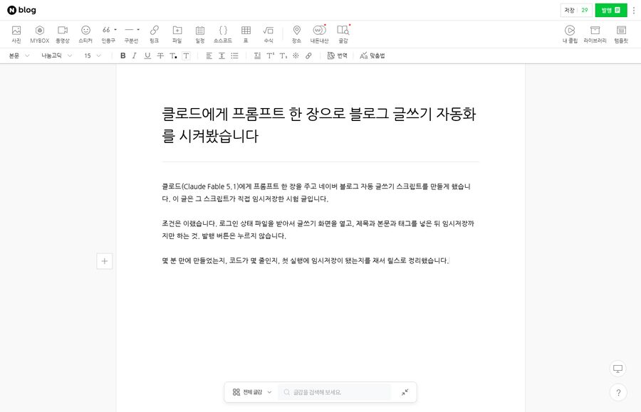
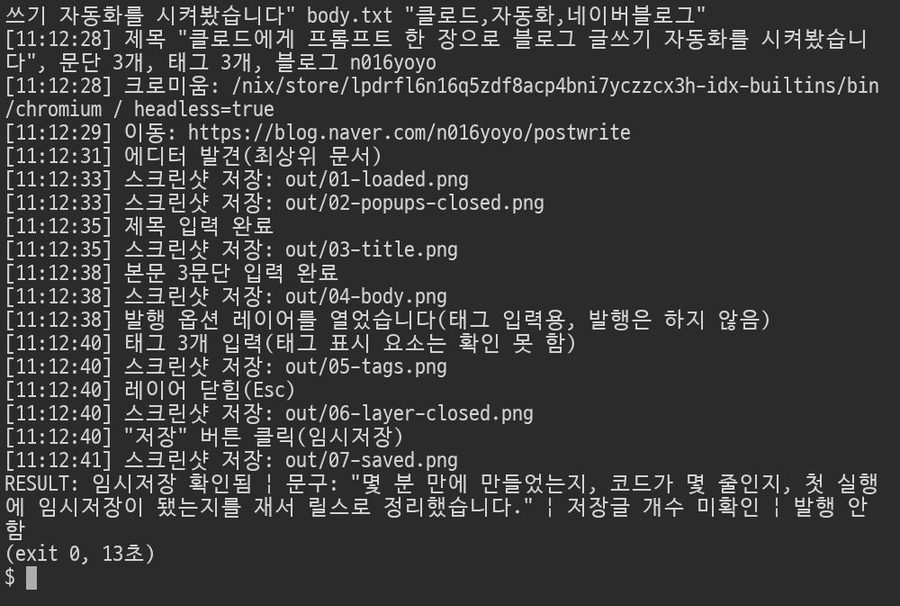

저장소 밖 빈 폴더에서 클로드(Claude Fable 5.1)에게 아래 프롬프트 한 장을 주고 기다렸습니다. 클로드가 혼자 폴더를 확인하고, post.js 512줄과 설명서를 쓰고, 문법 검사까지 하고 끝났어요. 그걸 제 네이버 계정의 로그인 상태 파일로 실행했더니 13초 만에 제목·본문·태그가 들어가고 임시저장됐습니다. 발행 버튼은 스크립트가 절대 누르지 않게 했고, 발행은 제가 읽어보고 누릅니다.
※ 세 번 돌렸습니다. 1차는 제 작업 폴더 안에서 돌려서 클로드가 기존 스크립트를 베꼈고(무효), 2차는 10턴째에 클로드 사용 한도에 걸려 끊겼습니다. 영상과 이 페이지의 숫자는 전부 격리된 빈 폴더에서 돌린 3차 기록입니다. 실행 기록 원본(stream.jsonl)과 스크린샷은 제 저장소에 그대로 있습니다.
전부 잰 값입니다. 무엇으로 쟀는지 옆에 적었어요
| 무엇 | 값 | 어떻게 쟀나 |
|---|---|---|
| 만드는 데 걸린 시간 | 7분 10초 | 시작·끝 시각 차이(벽시계) |
| 주고받은 턴 | 8턴 | 클로드 실행 기록(stream.jsonl)의 num_turns |
| 클로드가 한 일 | 7회 | 도구 호출(폴더 확인 3 · 파일 쓰기 2 · 시험 1 · 문법 검사 1) |
| 결과 파일 | 2개 | post.js 512줄(wc -l) + README.md |
| 첫 실행 | 13초, 임시저장 확인 | 같은 제목·본문·태그로 실행, 에디터 저장 버튼 숫자 28 → 30(두 번 실행) |

조건 여덟 줄 중 여러분이 바꿔 적을 건 딱 세 줄이에요: 로그인 파일, 글쓰기 주소, 임시저장까지만
네이버 블로그에 글을 자동으로 쓰는 스크립트를 만들어 줘. 이 폴더는 비어 있어. 완성될 때까지 혼자 진행해.
조건
- Node.js 스크립트 post.js 하나. 실행: node post.js <storageState.json> <블로그ID> <제목> <본문파일> "<태그1,태그2>"
- 브라우저는 playwright 를 쓴다. 설치돼 있는 모듈을 그대로 쓴다: require("playwright") 가 이 폴더에서 바로 된다(node_modules 에 들어 있고 크로미움 실행 파일도 같이 잡힌다). npm install 은 하지 마.
- 로그인은 storageState JSON 파일(이미 로그인된 상태)을 첫 인자로 받아 쓴다. 로그인 절차를 새로 짜지 마.
- 글쓰기 화면 진입은 https://blog.naver.com/<블로그ID>/postwrite 로 한다.
- 제목, 본문(파일 내용, 문단은 빈 줄로 구분), 태그를 입력하고 "임시저장"만 누른다. 발행은 절대 누르지 마.
- 진행 단계마다 out/ 폴더에 스크린샷을 남기고, 끝나면 임시저장이 됐는지 화면에서 확인한 결과를 콘솔에 한 줄로 찍는다.
- 다 만들면 node --check post.js 로 문법을 확인하고, README.md 에 실행법을 5줄 안으로 적는다.
- 실제로 실행해 보지는 마(로그인 파일이 없다). 코드만 완성해.
클로드에게 로그인 절차를 짜게 하지 않습니다. 이미 로그인된 브라우저 상태(storageState.json)를 첫 인자로 넘기면 비밀번호가 코드에 안 들어가요.
https://blog.naver.com/<블로그ID>/postwrite. 이 주소를 안 주면 클로드가 구형 진입점을 찾다가 재로그인 화면에 튕깁니다(제가 두 달 전에 겪은 함정).
검토 없이 자동 발행되면 사고가 납니다. 초안은 AI, 발행 버튼은 사람. 클로드가 만든 코드도 발행 버튼을 코드에서 막아 뒀어요.
node -v, claude --version이 찍히면 됩니다.npm init -y && npm i playwright && npx playwright install chromium. 브라우저 조작 도구예요.npx playwright codegen --save-storage=state.json https://blog.naver.com 를 치면 브라우저가 뜹니다. 거기서 네이버에 직접 로그인한 뒤 창을 닫으면 state.json이 저장돼요. 이 파일은 비밀번호나 마찬가지니 남과 공유하지 마세요.prompt.txt로 저장하고, 같은 폴더에서 클로드 코드를 엽니다. 채팅창에 프롬프트를 붙여 넣거나, 터미널에서 claude -p "$(cat prompt.txt)" --model claude-fable-5-1 --dangerously-skip-permissions.node post.js state.json 내블로그ID "제목" body.txt "태그1,태그2". body.txt는 본문 텍스트(문단은 빈 줄로 구분). out/ 폴더에 단계별 스크린샷이 남고 마지막 줄에 RESULT: 가 찍힙니다.
① 네이버는 자동 프로그램 사용을 좋아하지 않아요. 사람이 하던 양·속도(하루 한두 편, 검토 후 발행)를 넘기지 마세요. ② 클로드가 만든 코드는 매번 조금씩 달라요. 제 결과와 다르면 실행 결과 화면을 그대로 복사해 "이 오류가 났어, 고쳐줘" 한 번 더 주면 됩니다. ③ 클로드 코드는 유료 구독이 필요합니다(이 실험은 Max 구독으로 했고, 한 번 돌리는 데 한도가 꽤 나갑니다).
제 환경(playwright 심볼릭)에 맞춰 나온 코드라 그대로 쓰기보다 여러분 폴더에서 새로 만드는 걸 권해요. 어떤 모양으로 나오는지 보려고 붙였습니다.
#!/usr/bin/env node
'use strict';
/**
* post.js — 네이버 블로그 글 자동 작성 (임시저장 전용, 발행 금지)
*
* 실행: node post.js <storageState.json> <블로그ID> <제목> <본문파일> "<태그1,태그2>"
*
* 동작
* 1. playwright 크로미움을 띄우고 storageState(이미 로그인된 세션)를 그대로 읽어 컨텍스트를 만든다.
* 2. https://blog.naver.com/<블로그ID>/postwrite 로 들어가 SmartEditor ONE 을 찾는다.
* 3. 이어쓰기 확인창/도움말 패널 등 떠 있는 팝업을 닫는다.
* 4. 제목, 본문(빈 줄 = 문단 구분), 태그를 입력한다.
* - 태그 입력칸은 SmartEditor ONE 에서 "발행" 옵션 레이어 안에만 있으므로, 레이어를 열어 태그만 넣고
* 레이어를 다시 닫는다. 레이어 안의 최종 "발행"(confirm) 버튼은 어떤 경우에도 누르지 않는다.
* 5. 상단 "저장"(임시저장) 버튼을 누르고, 완료 문구 또는 저장글 개수 증가를 화면에서 확인한다.
* 6. 단계마다 out/ 에 스크린샷을 남기고, 마지막에 "RESULT: ..." 한 줄을 콘솔에 찍는다.
*
* 환경변수
* HEADLESS=0 브라우저 창을 보이게 실행
* PLAYWRIGHT_CHROMIUM_PATH 사용할 크로미움 실행 파일 경로(번들 크로미움이 없을 때)
*
* 종료 코드: 0 임시저장 확인됨 / 2 저장 버튼은 눌렀지만 화면에서 확인 실패 / 1 오류
*/
const fs = require('fs');
const path = require('path');
const { execFileSync } = require('child_process');
const { chromium } = require('playwright');
const OUT_DIR = path.resolve(process.cwd(), 'out');
const HEADLESS = process.env.HEADLESS !== '0';
const STEP_TIMEOUT = 20000; // 요소 대기 기본 시간(ms)
const DESKTOP_UA =
'Mozilla/5.0 (Windows NT 10.0; Win64; x64) AppleWebKit/537.36 (KHTML, like Gecko) Chrome/128.0.0.0 Safari/537.36';
// 화면 요소 선택자. 네이버는 클래스 뒤에 해시(예: save_btn__bzc5B)를 붙이므로 부분 일치(*=)로 잡고,
// 각 항목은 앞에서부터 순서대로 시도한다.
const SEL = {
editorRoot: '.se-main-container, .se-documentTitle',
title: ['.se-documentTitle .se-text-paragraph', '.se-section-documentTitle', '.se-documentTitle'],
body: [
'.se-main-container .se-component.se-text .se-text-paragraph',
'.se-main-container .se-component.se-text',
'.se-section-text',
],
// 이어쓰기 확인창("작성 중인 글이 있습니다...")은 "취소"를 눌러 새 글로 시작한다.
popupCancel: ['.se-popup-button-cancel', '.se-popup button:has-text("취소")'],
popupClose: ['.se-popup-close-button', '.se-popup-close', 'button.se-popup-button-close'],
helpClose: ['.se-help-panel-close-button'],
tagInput: ['#tag-input', 'input[placeholder*="태그"]', 'input[id*="tag"]', 'input[class*="tag"]'],
// 상단 "발행" 버튼: 옵션 레이어를 여는 토글이다(이것만으로는 발행되지 않음). confirm 류는 제외한다.
publishOpener: ['button[class*="publish_btn"]', 'button:has-text("발행"):not([class*="confirm"])'],
// 레이어 안의 최종 발행 버튼. 절대 클릭하지 않으며, 실수 방지 검사에만 쓴다.
publishConfirm: 'button[class*="confirm_btn"], button[class*="confirm"]',
saveButton: [
'button[class*="save_btn"]',
'button:has-text("저장"):not([class*="publish"]):not([class*="confirm"])',
],
tagItem: ['[class*="tag_item"]', '[class*="tag-item"]', '[class*="tagItem"]'],
};
// ---------------------------------------------------------------- 인자/입력 처리
function usageAndExit(msg) {
if (msg) console.error('오류: ' + msg);
console.error('사용법: node post.js <storageState.json> <블로그ID> <제목> <본문파일> "<태그1,태그2>"');
process.exit(1);
}
function parseArgs(argv) {
const [storageStatePath, blogId, title, bodyFile, tagsRaw = ''] = argv;
if (!storageStatePath || !blogId || !title || !bodyFile) usageAndExit('인자가 부족합니다.');
if (!fs.existsSync(storageStatePath)) usageAndExit(`storageState 파일이 없습니다: ${storageStatePath}`);
if (!fs.existsSync(bodyFile)) usageAndExit(`본문 파일이 없습니다: ${bodyFile}`);
if (!/^[A-Za-z0-9_.-]+$/.test(blogId)) usageAndExit(`블로그ID 형식이 이상합니다: ${blogId}`);
return { storageStatePath, blogId, title: title.trim(), bodyFile, tagsRaw };
}
function checkStorageState(file) {
let state;
try {
state = JSON.parse(fs.readFileSync(file, 'utf8'));
} catch (e) {
usageAndExit(`storageState JSON 을 읽을 수 없습니다: ${e.message}`);
}
const cookies = Array.isArray(state.cookies) ? state.cookies : [];
const names = new Set(cookies.map((c) => c.name));
if (!names.has('NID_AUT') || !names.has('NID_SES')) {
console.warn('경고: storageState 에 네이버 로그인 쿠키(NID_AUT/NID_SES)가 보이지 않습니다. 로그인 상태가 아닐 수 있습니다.');
}
}
/** 본문 텍스트 → 문단 배열. 문단은 빈 줄로 구분, 문단 안의 줄바꿈은 그대로 유지한다. */
function splitParagraphs(text) {
const norm = text.replace(/^/, '').replace(/\r\n?/g, '\n');
return norm
.split(/\n[ \t]*\n+/)
.map((p) => {
const lines = p.split('\n').map((l) => l.replace(/\s+$/, ''));
while (lines.length && !lines[0].trim()) lines.shift();
while (lines.length && !lines[lines.length - 1].trim()) lines.pop();
return lines;
})
.filter((lines) => lines.length > 0);
}
/** "태그1, #태그2,태그1" → ["태그1","태그2"] (앞의 #, 공백 제거, 중복 제거, 최대 30개) */
function parseTags(raw) {
if (!raw) return [];
const seen = new Set();
const out = [];
for (const piece of String(raw).split(/[,\n]/)) {
const t = piece.trim().replace(/^#+/, '').trim();
if (!t || seen.has(t)) continue;
seen.add(t);
out.push(t);
}
return out.slice(0, 30);
}
// ---------------------------------------------------------------- 브라우저 준비
/** 번들 크로미움이 있으면 undefined(기본값 사용), 없으면 환경변수/시스템 크로미움 경로를 돌려준다. */
function resolveExecutablePath() {
const envPath = process.env.PLAYWRIGHT_CHROMIUM_PATH;
if (envPath && fs.existsSync(envPath)) return envPath;
try {
const bundled = chromium.executablePath();
if (bundled && fs.existsSync(bundled)) return undefined;
} catch (_) {
/* 무시 */
}
for (const name of ['chromium', 'chromium-browser', 'google-chrome', 'google-chrome-stable', 'chrome']) {
try {
const p = execFileSync('which', [name], { stdio: ['ignore', 'pipe', 'ignore'] }).toString().trim();
if (p && fs.existsSync(p)) return p;
} catch (_) {
/* 다음 후보 */
}
}
return undefined; // 그래도 없으면 playwright 가 스스로 안내 메시지와 함께 실패한다.
}
function now() {
return new Date().toTimeString().slice(0, 8);
}
function log(msg) {
console.log(`[${now()}] ${msg}`);
}
/** out/NN-이름.png 로 저장하는 스크린샷 함수를 만든다. */
function makeShooter(page) {
let n = 0;
return async function shot(name) {
n += 1;
const file = path.join(OUT_DIR, `${String(n).padStart(2, '0')}-${name}.png`);
try {
await page.screenshot({ path: file, fullPage: false });
log(`스크린샷 저장: ${path.relative(process.cwd(), file)}`);
} catch (e) {
log(`스크린샷 실패(${name}): ${e.message}`);
}
return file;
};
}
// ---------------------------------------------------------------- 요소 탐색 도우미
/** 여러 선택자를 순서대로 훑어 화면에 보이는 첫 요소를 돌려준다(없으면 null). */
async function firstVisible(scope, selectors) {
for (const sel of selectors) {
try {
const loc = scope.locator(sel);
const count = await loc.count();
for (let i = 0; i < Math.min(count, 20); i++) {
const el = loc.nth(i);
if (await el.isVisible().catch(() => false)) return el;
}
} catch (_) {
/* 선택자 실패 → 다음 후보 */
}
}
return null;
}
async function waitVisible(scope, selectors, timeout = STEP_TIMEOUT) {
const deadline = Date.now() + timeout;
for (;;) {
const el = await firstVisible(scope, selectors);
if (el) return el;
if (Date.now() > deadline) return null;
await sleep(300);
}
}
function sleep(ms) {
return new Promise((r) => setTimeout(r, ms));
}
/** 에디터(.se-main-container)가 들어 있는 프레임을 찾는다. 최상위 문서 또는 iframe 어느 쪽이든 지원. */
async function findEditorFrame(page, timeout = 45000) {
const deadline = Date.now() + timeout;
while (Date.now() < deadline) {
for (const frame of page.frames()) {
const count = await frame.locator(SEL.editorRoot).count().catch(() => 0);
if (count > 0) return frame;
}
if (/nid\.naver\.com/.test(page.url())) return null; // 로그인 페이지로 튕김
await sleep(500);
}
return null;
}
/** 이 요소가 레이어 안의 최종 "발행" 버튼이 아닌지 확인한다(실수 방지). */
async function assertNotConfirmButton(el, what) {
const cls = (await el.getAttribute('class').catch(() => '')) || '';
if (/confirm/i.test(cls)) {
throw new Error(`${what} 로 잡힌 요소가 발행 확인 버튼(class="${cls}")입니다. 안전을 위해 중단합니다.`);
}
}
/** 글쓰기 화면을 벗어났는지(=발행/이동됐는지) 검사한다. */
function assertStillOnWritePage(page) {
const url = page.url();
if (!/postwrite|PostWriteForm/i.test(url)) {
throw new Error(`글쓰기 화면을 벗어났습니다(현재 URL: ${url}). 발행 여부를 직접 확인하세요.`);
}
}
// ---------------------------------------------------------------- 단계별 동작
async function dismissPopups(frame) {
let closed = 0;
for (let round = 0; round < 3; round++) {
let hit = false;
const cancel = await firstVisible(frame, SEL.popupCancel);
if (cancel) {
await cancel.click().catch(() => {});
log('이어쓰기/확인 팝업에서 "취소"를 눌러 새 글로 시작');
hit = true;
}
const close = await firstVisible(frame, SEL.popupClose);
if (close) {
await close.click().catch(() => {});
log('팝업 닫기 버튼 클릭');
hit = true;
}
const help = await firstVisible(frame, SEL.helpClose);
if (help) {
await help.click().catch(() => {});
log('도움말 패널 닫기');
hit = true;
}
if (!hit) break;
closed += 1;
await sleep(600);
}
return closed;
}
async function typeTitle(frame, page, title) {
const el = await waitVisible(frame, SEL.title);
if (!el) throw new Error('제목 입력 영역을 찾지 못했습니다.');
await el.click();
await sleep(200);
await page.keyboard.type(title, { delay: 15 });
await sleep(300);
const got = ((await frame.locator('.se-documentTitle').first().innerText().catch(() => '')) || '').trim();
if (got && !got.includes(title)) log(`경고: 제목 확인 결과가 다릅니다. 화면="${got}"`);
return got;
}
async function typeBody(frame, page, paragraphs) {
const el = await waitVisible(frame, SEL.body);
if (!el) throw new Error('본문 입력 영역을 찾지 못했습니다.');
await el.click();
await sleep(200);
for (let i = 0; i < paragraphs.length; i++) {
const lines = paragraphs[i];
for (let j = 0; j < lines.length; j++) {
if (lines[j]) await page.keyboard.type(lines[j], { delay: 5 });
if (j < lines.length - 1) await page.keyboard.press('Shift+Enter'); // 문단 안 줄바꿈
}
if (i < paragraphs.length - 1) {
await page.keyboard.press('Enter'); // 새 문단
await page.keyboard.press('Enter'); // 원문의 빈 줄을 그대로 살린다
}
}
await sleep(300);
}
/**
* 태그 입력. 태그칸이 화면에 바로 있으면 거기에, 없으면 "발행" 옵션 레이어를 열어 태그만 넣고 레이어를 닫는다.
* 레이어 안의 최종 발행(confirm) 버튼은 절대 누르지 않는다.
*/
async function typeTags(frame, page, tags, shot) {
if (!tags.length) {
log('태그 없음, 건너뜀');
return { entered: 0, layerOpened: false };
}
let input = await firstVisible(frame, SEL.tagInput);
let opener = null;
if (!input) {
opener = await firstVisible(frame, SEL.publishOpener);
if (!opener) {
log('경고: 태그 입력칸도, 발행 옵션 레이어 버튼도 찾지 못해 태그를 건너뜁니다.');
return { entered: 0, layerOpened: false };
}
await assertNotConfirmButton(opener, '발행 옵션 레이어 버튼');
await opener.click();
log('발행 옵션 레이어를 열었습니다(태그 입력용, 발행은 하지 않음)');
input = await waitVisible(frame, SEL.tagInput, 10000);
if (!input) {
await shot('tags-input-missing');
await closePublishLayer(frame, page, opener);
log('경고: 레이어 안에서 태그 입력칸을 찾지 못해 태그를 건너뜁니다.');
return { entered: 0, layerOpened: true };
}
}
let entered = 0;
for (const tag of tags) {
await input.click();
await page.keyboard.type(tag, { delay: 10 });
await page.keyboard.press('Enter');
await sleep(150);
entered += 1;
}
const items = await firstVisible(frame, SEL.tagItem);
if (items) {
const n = await frame.locator(SEL.tagItem[0]).count().catch(() => 0);
log(`태그 ${entered}개 입력, 화면에 표시된 태그 ${n}개`);
} else {
log(`태그 ${entered}개 입력(태그 표시 요소는 확인 못 함)`);
}
await shot('tags');
if (opener) {
await closePublishLayer(frame, page, opener);
await shot('layer-closed');
}
assertStillOnWritePage(page);
return { entered, layerOpened: Boolean(opener) };
}
/** 발행 옵션 레이어를 닫는다: Esc → 같은 토글 버튼 다시 클릭 → 제목 영역 클릭 순으로 시도. */
async function closePublishLayer(frame, page, opener) {
const isOpen = async () => Boolean(await firstVisible(frame, SEL.tagInput));
if (!(await isOpen())) return;
await page.keyboard.press('Escape');
await sleep(400);
if (!(await isOpen())) return log('레이어 닫힘(Esc)');
if (opener) {
await assertNotConfirmButton(opener, '발행 옵션 레이어 버튼');
await opener.click().catch(() => {});
await sleep(400);
if (!(await isOpen())) return log('레이어 닫힘(토글 버튼)');
}
const title = await firstVisible(frame, SEL.title);
if (title) {
await title.click({ position: { x: 5, y: 5 } }).catch(() => {});
await sleep(400);
if (!(await isOpen())) return log('레이어 닫힘(바깥 클릭)');
}
log('경고: 발행 옵션 레이어가 닫히지 않았습니다. 저장은 계속 진행합니다.');
}
function parseCount(text) {
const m = String(text || '').match(/\d+/);
return m ? Number(m[0]) : null;
}
/** 저장 완료 안내 문구(토스트/알림)를 찾는다. */
async function findSavedMessage(frame) {
const re = /(임시\s*저장|저장)\s*(이|가)?\s*(되었|됐|완료)/;
const candidates = frame.locator(
'[class*="toast"], [class*="Toast"], .se-popup, [role="alert"], [role="status"], [class*="notice"], [class*="alert"], [class*="message"]'
);
const count = await candidates.count().catch(() => 0);
for (let i = 0; i < Math.min(count, 30); i++) {
const el = candidates.nth(i);
if (!(await el.isVisible().catch(() => false))) continue;
const text = ((await el.innerText().catch(() => '')) || '').replace(/\s+/g, ' ').trim();
if (re.test(text)) return text;
}
const any = frame.getByText(re).first();
if (await any.isVisible().catch(() => false)) {
return ((await any.innerText().catch(() => '')) || '').replace(/\s+/g, ' ').trim();
}
return null;
}
/** 상단 "저장"(임시저장) 버튼을 누르고 화면에서 결과를 확인한다. */
async function saveDraft(frame, page) {
const btn = await waitVisible(frame, SEL.saveButton);
if (!btn) throw new Error('임시저장("저장") 버튼을 찾지 못했습니다.');
await assertNotConfirmButton(btn, '저장 버튼');
const label = ((await btn.innerText().catch(() => '')) || '').replace(/\s+/g, ' ').trim();
if (/발행/.test(label)) throw new Error(`저장 버튼으로 잡힌 요소의 글자가 "${label}" 입니다. 안전을 위해 중단합니다.`);
const before = parseCount(label);
log(`"${label}" 버튼 클릭(임시저장)`);
await btn.click();
const deadline = Date.now() + 12000;
let message = null;
let after = before;
while (Date.now() < deadline) {
message = await findSavedMessage(frame);
after = parseCount(await btn.innerText().catch(() => ''));
if (message || (before !== null && after !== null && after > before)) break;
await sleep(400);
}
assertStillOnWritePage(page);
const confirmed = Boolean(message) || (before !== null && after !== null && after > before);
return { confirmed, message, before, after };
}
// ---------------------------------------------------------------- 메인
async function main() {
const args = parseArgs(process.argv.slice(2));
checkStorageState(args.storageStatePath);
const paragraphs = splitParagraphs(fs.readFileSync(args.bodyFile, 'utf8'));
if (!paragraphs.length) usageAndExit('본문 파일이 비어 있습니다.');
const tags = parseTags(args.tagsRaw);
fs.mkdirSync(OUT_DIR, { recursive: true });
log(`제목 "${args.title}", 문단 ${paragraphs.length}개, 태그 ${tags.length}개, 블로그 ${args.blogId}`);
const executablePath = resolveExecutablePath();
log(`크로미움: ${executablePath || '(playwright 번들)'} / headless=${HEADLESS}`);
const browser = await chromium.launch({ headless: HEADLESS, executablePath });
const context = await browser.newContext({
storageState: args.storageStatePath,
viewport: { width: 1400, height: 900 },
locale: 'ko-KR',
timezoneId: 'Asia/Seoul',
userAgent: HEADLESS ? DESKTOP_UA : undefined,
});
const page = await context.newPage();
page.setDefaultTimeout(STEP_TIMEOUT);
page.on('dialog', async (dialog) => {
log(`브라우저 대화상자(${dialog.type()}): ${dialog.message()}`);
if (dialog.type() === 'beforeunload') await dialog.accept().catch(() => {});
else await dialog.dismiss().catch(() => {});
});
const shot = makeShooter(page);
let result = 'RESULT: 오류로 임시저장 여부를 확인하지 못함';
let exitCode = 1;
try {
const url = `https://blog.naver.com/${args.blogId}/postwrite`;
log(`이동: ${url}`);
await page.goto(url, { waitUntil: 'domcontentloaded', timeout: 60000 });
const frame = await findEditorFrame(page);
if (!frame) {
await shot('editor-not-found');
if (/nid\.naver\.com/.test(page.url())) {
throw new Error('로그인 페이지로 이동했습니다. storageState 가 만료됐거나 로그인 상태가 아닙니다.');
}
throw new Error(`글쓰기 에디터를 찾지 못했습니다(현재 URL: ${page.url()}).`);
}
log(`에디터 발견(${frame === page.mainFrame() ? '최상위 문서' : 'iframe: ' + frame.url()})`);
await sleep(1500); // 에디터 초기화 여유
await shot('loaded');
await dismissPopups(frame);
await shot('popups-closed');
await typeTitle(frame, page, args.title);
log('제목 입력 완료');
await shot('title');
await typeBody(frame, page, paragraphs);
log(`본문 ${paragraphs.length}문단 입력 완료`);
await shot('body');
await typeTags(frame, page, tags, shot);
const saved = await saveDraft(frame, page);
await shot('saved');
const countInfo =
saved.before !== null && saved.after !== null ? `저장글 개수 ${saved.before}→${saved.after}` : '저장글 개수 미확인';
if (saved.confirmed) {
result = `RESULT: 임시저장 확인됨 | 문구: ${saved.message ? `"${saved.message}"` : '없음'} | ${countInfo} | 발행 안 함`;
exitCode = 0;
} else {
result = `RESULT: 임시저장 확인 안 됨 | 저장 버튼은 눌렀지만 완료 문구/개수 증가를 화면에서 못 찾음 (${countInfo}) | out/ 스크린샷 확인 필요`;
exitCode = 2;
}
} catch (err) {
console.error(`오류: ${err.message}`);
await shot('error');
result = `RESULT: 실패 | ${err.message.split('\n')[0]}`;
exitCode = 1;
} finally {
await browser.close().catch(() => {});
console.log(result);
process.exit(exitCode);
}
}
if (require.main === module) {
main().catch((err) => {
console.error(err);
console.log(`RESULT: 실패 | ${String(err && err.message ? err.message : err).split('\n')[0]}`);
process.exit(1);
});
}
module.exports = { splitParagraphs, parseTags, parseCount, resolveExecutablePath };
← AI TIGER MASK 홈 · © 2026 DONGHYUCK YANG